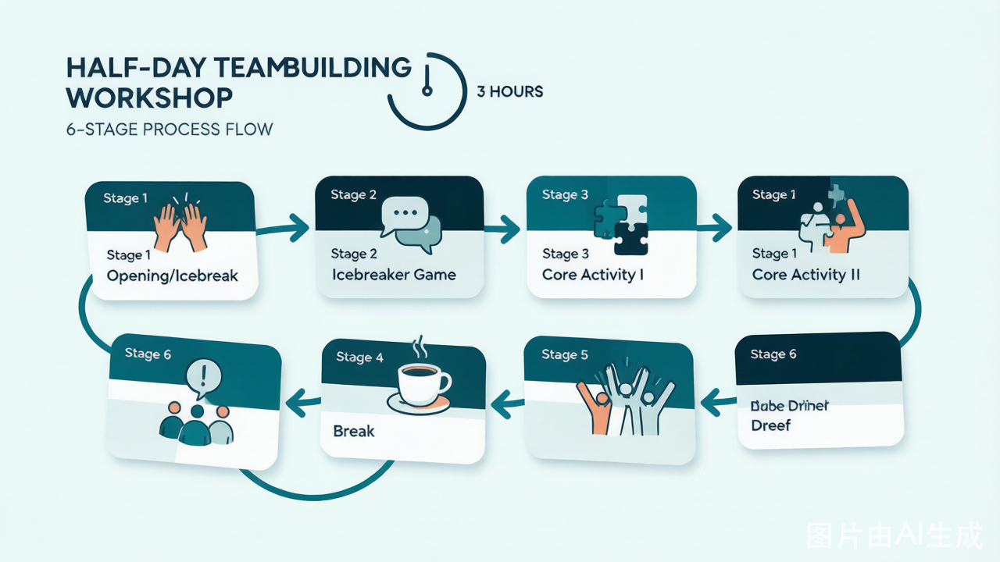
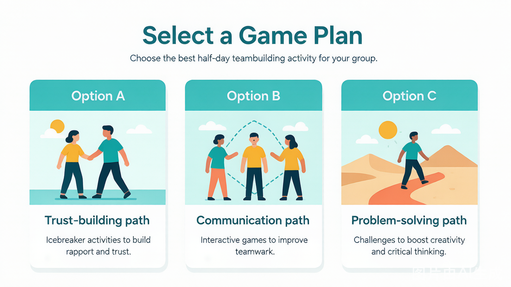

| 14:00–14:20 | 开场破冰 | 20 min | 放松气氛、建立安全感 |
|---|---|---|---|
| 14:20–14:50 | 破冰游戏 | 30 min | 打破隔阂、能量激活 |
| 14:50–15:40 | 核心活动 I | 50 min | 信任建立 / 沟通表达 |
| 15:40–15:55 | 课间休息 | 15 min | 补水、放松 |
| 15:55–16:35 | 核心活动 II | 40 min | 团队协作 / 问题解决 |
| 16:35–17:00 | 总结复盘 | 25 min | 提炼收获、情感升华 |
流程总览：半天团建六阶段（约3小时）

详细流程
第一阶段：开场破冰（14:00–14:20）
目标：让参与者从工作状态切换到团建状态，建立基本安全感。
教练操作清单
- ☐ 提前 15 分钟到场，检查场地、音响、道具
- ☐ 播放轻快背景音乐（推荐：轻爵士 / 无歌词流行）
- ☐ 站门口迎接，主动和每个人打招呼（记住名字！）
- ☐ 开场白（见下方话术模板）
开场白话术模板
- 名字接龙（5–10 min，快速热身）
- 简单的身体活动（伸展、拍手节奏等）
第二阶段：破冰游戏（14:20–14:50）
目标：进一步打破隔阂，让参与者记住彼此的名字和特点。
推荐游戏组合（三选一）
教练关键把控点
- 观察谁最放不开，在游戏中有意让他/她多发言
- 如果有人一直站在角落，走到他/她身边说："你这组需要一个关键人物，来！"
- 能量不够时，教练自己要先嗨起来（带头鼓掌、夸张表情）
第三阶段：核心活动 I（14:50–15:40）
目标：通过深度互动，建立信任或改善沟通。
推荐游戏组合
方案 A：信任建立方向
\* 简化版：只做 1.2 米高度，每人只摔 1 次，适合时间紧张的半日团建。
方案 B：沟通表达方向
| 顺序 | 游戏 | 时长 | 说明 |
|---|---|---|---|
| 1 | 盲人方阵 | 35 min | 经典沟通游戏，复盘价值高 |
| 2 | 简短分享 | 10 min | 每组派代表分享"沟通中最难的部分" |
方案 C：问题解决方向（适合培训场景）
| 顺序 | 游戏 | 时长 | 说明 |
|---|---|---|---|
| 1 | 沙漠逃生 | 40 min | 团队决策，讨论激烈 |
| 2 | 复盘 | 5 min | 快速提炼 1 个关键词 |

教练关键把控点
- 此阶段最容易出现情绪波动（有人被感动、有人被触动）
- 教练要敏锐观察，如果有人眼眶红了，不要刻意点破，给空间
- 如果有人开玩笑化解情绪，也不用阻止——每个人有自己的处理方式
第四阶段：课间休息（15:40–15:55）
目标：让大脑和身体放松，为下一轮活动蓄能。
教练操作清单
- ☐ 宣布休息时，给出明确的回归时间："15 分钟后，也就是 15:55，我们在这里集合，不准时我有惩罚哦～"
- ☐ 休息时间教练不要消失，在场地边走动，和参与者随意聊天
- ☐ 提前 2 分钟用音乐或口头提醒召集
第五阶段：核心活动 II（15:55–16:35）
目标：通过协作任务，让团队体验"一起搞定一件事"的成就感。
推荐游戏组合
方案 A：动手协作
| 游戏 | 时长 | 说明 |
|---|---|---|
| 报纸塔挑战 | 35 min | 动手+策略，成果可视化 |
| 展示 + 投票 | 5 min | 快速投票，选出"最高塔" |
方案 B：创新思维
| 游戏 | 时长 | 说明 |
|---|---|---|
| 10元买创意 | 40 min | 资源受限下的创新，讨论激烈 |
方案 C：综合能力（体力+智力）
\* 简化版：材料减半，高度降为 2 米，侧重参与而非竞争。
第六阶段：总结复盘（16:35–17:00）
目标：把今天的体验转化为可带走的感悟。
复盘流程（25 分钟）
第一步：快速回顾（5 min） 教练问："今天玩了几个游戏？你还记得名字吗？"（带动气氛）
第二步：4F 模型引导（15 min）
按小组围圈，每个 F 给 3–4 分钟讨论 + 分享：
步骤
提问示例
Facts（事实）
"今天哪个瞬间让你印象最深？"
Feelings（感受）
"在 [某个游戏] 里，你当时是什么感受？"
Findings（发现）
"你发现自己或队友的什么特点？"
Future（未来）
"回到工作中，你会做一件什么不同的事？"
第三步：一句话收尾（5 min）
每人用一句话分享今天最大的收获。
教练最后说：
人类宾果
打印 Bingo 卡片（每人 1 张）
盲行
眼罩（每人 1 个）或红领巾
信任背摔
瑜伽垫（保护）
盲人方阵
长绳（每组 1 根）、眼罩
报纸塔
报纸（每组 10 张）、胶带（每组 1 卷）、剪刀
10元买创意
10 元人民币（每组 1 份）
沙漠逃生
物品清单打印（每人 1 份）、打分表
鸡蛋坠落
生鸡蛋（每组 3 颗）、吸管、牙签、胶带、A4纸
客户沟通模板
活动前 3 天确认邮件
- 如果观察到参与者疲劳（眼神涣散、动作变慢），插入 3 分钟 energizer（如"321 木头人"）
_模板版本：v1.0 | 最后更新：2026-06-25_